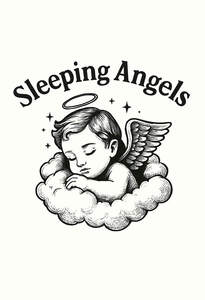

Trade Mark Journal No.2026/001 2 January 2026
UK00004311316 16 December 2025 (21,25,35)

- Class 21
- Mugs; Cups and mugs; Coffee mugs; Ceramic mugs; Earthenware mugs; Porcelain mugs; Mugs of porcelain; Beer mugs; China mugs; Mugs of china; Glass mugs; Insulated mugs; Travel mugs; Mug cosies; Mugs made of porcelain; Mugs made of earthenware; Mug racks; Mugs made of china; Drinking mugs made of porcelain; Vacuum mugs; Mugs made of plastic; Mug sleeves; Mugs made of ceramic materials; Mugs of precious metal; Mug trees; Drinkware; Teapots; Teacups (yunomi); Teacups [yunomi]; Coffee cups; Tankards; Coffee pots; Coasters (tableware); Porcelain coasters; Mugs made of fine bone china; Tea cups; Mugs, not of precious metal; Pint tankards; Coffee stirrers; Tumblers for use as drinking glasses; Carafes; Glass cups; Pewter tankards; Cups; Tumblers; Commemorative statuary cups of porcelain, ceramic, earthenware, terra-cotta or glass; Tea pots; Cups made of earthenware; Cups made of pottery; Demitasse sets comprised of cups and saucers; Figurines [statuettes] of porcelain, ceramic, earthenware or glass; Prize cups of porcelain, ceramic, earthenware, terra-cotta or glass; Figurines of porcelain, ceramic, earthenware, terra-cotta or glass for cakes; Goblets; Saucepans (Earthenware -); Earthenware saucepans; Glass carafes; Holders for tumblers; Insulated bottles [flasks]; Figurines of earthenware; Glass pots; Ceramic figurines; Trivets; Ceramic tableware; Beer steins; Steins; Glasses, drinking vessels and barware; Souvenir plates; Pint glasses; Coffee pots [non-electric]; Non-electric coffee pots; Cups made of china; Pewter goblets; Tumblers [drinking vessels]; Beer jugs; Tea canisters; Statuettes of porcelain, ceramic, earthenware or glass; Tea cosies; Cosies (Tea -); Trivets [table utensils]; Beer glasses; Drinking steins; Cardboard cups; Statues of porcelain, ceramic, earthenware or glass; Statues of porcelain, earthenware, ceramic or glass; Glass bowls; Bowls (Glass -); Liqueur cups; Busts of porcelain, ceramic, earthenware or glass; Figurines of glass; Drinking cups; Plastic cups; Insulated lids for plates and dishes; Glassware; Figurines of porcelain, ceramic, earthenware, terra-cotta or glass; Beverage glassware; Insulating sleeve holder for beverage cups; Glass flasks [containers]; Urns being vases; Japanese-style teapots [kyusu]; Plaques of earthenware; Sippy cups; Tableware of porcelain; Decanters; Ceramic ornaments; Figurines of porcelain; Crockery made of porcelain; Boxes of earthenware; Glass tableware; Coffee services [tableware]; Glass flasks; Biodegradable cups; Coffee services of ceramic; Glass decanters; Tableware, cookware and containers; Compostable cups; Stirrers (Drink -).
- Class 25
- Clothing; Knitwear [clothing]; Jackets [clothing]; Ready-to-wear clothing; Woolen clothing; Furs [clothing]; Garments for protecting clothing; Layettes [clothing]; Clothing layettes; Linen clothing; Headbands [clothing]; Headbands for clothing; Gloves [clothing]; Gloves as clothing; Clothes; Aprons [clothing]; Maternity clothing; Kerchiefs [clothing]; Jerseys [clothing]; Denims [clothing]; Shorts [clothing]; Cashmere clothing; Capes (clothing); Gabardines [clothing]; Oilskins [clothing]; Leather clothing; Clothing of leather; Leather (Clothing of -); Silk clothing; Collars [clothing]; Parts of clothing, footwear and headgear; Knitted clothing; Veils [clothing]; Hoods [clothing]; Windproof clothing; Corsets [clothing, foundation garments]; Embroidered clothing; Wristbands [clothing]; Belts [clothing]; Belts for clothing; Bandeaux [clothing]; Casual clothing; Rainproof clothing; Waterproof clothing; Visors [clothing]; Jackets being sports clothing; Jackets (Stuff -) [clothing]; Stuff jackets [clothing]; Bottoms [clothing]; Clothing for leisure wear; Playsuits [clothing]; Ready-made clothing; Woven clothing; Latex clothing; Trunks being clothing; Infant clothing; Leisure clothing; Drawers [clothing]; Drawers as clothing; Ties [clothing]; Clothing for sports; Sports clothing; Athletic clothing; Clothing for children; Muffs [clothing]; Bodies [clothing]; Clothing for babies; Tops [clothing]; Clothing for infants; Clothing for cycling; Weatherproof clothing; Fabric belts [clothing]; Pockets for clothing; Water-resistant clothing; Triathlon clothing; Handwarmers [clothing]; Clothing for skiing; Thermal clothing; Beach clothing; Chaps (clothing); Cowls [clothing]; Men's clothing; Fishing clothing; Mitts [clothing]; Braces for clothing; Dance clothing.
- Class 35
- Retail services connected with the sale of clothing and clothing accessories; Retail services in relation to cups and drinking glasses.
Soraia de Fatima Galego Marta